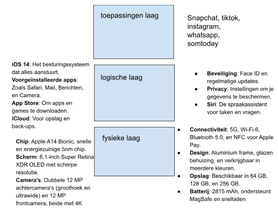

computer-architectuur
Computerarchitectuur is eigenlijk de kunst van het selecteren en verbinden van hardware-onderdelen om computers te bouwen en te laten werken.
De basis van de meeste moderne computers is de Von Neumann-architectuur, een model dat aangeeft hoe een computer data en instructies verwerkt.
Hieronder zie je een afbeelding waaruit computer-architectuur bestaat.
Je kunt uit de afbeelding opmaken dat het bestaat uit 3 lagen namelijk: De toepassingenlaag, de logische laag en de fysieke laag.
De toepassingenlaag is het deel van je computer waar je direct mee aan de slag kunt.
Het gaat om de apps die je gebruikt en de API's die ervoor zorgen dat verschillende programma's met elkaar kunnen praten.
De logischelaag is eigenlijk een besturingssysteem die alle bestanden en mappen op je computer organiseerd en behoudt.
De fysiekelaag van een computer bestaat uit alle hardware-onderdelen die je kunt aanraken en zien, en die samen werken om de computer te laten functioneren.
Denk bijvoorbeeld aan RAM/ ROM, permanent/ randapparatuur en Kloksnelheid/ verwerkingssnelheid.
Kortom, computerarchitectuur gaat over het efficiënt laten samenwerken van de hardware om gegevensverwerking mogelijk te maken.
